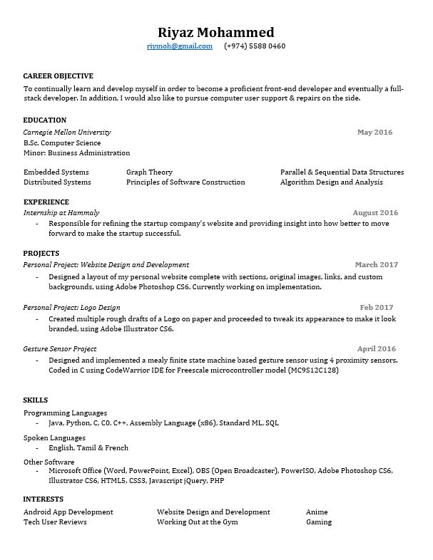

Interesting Proverbs
Albert Einstein
- Weakness of Attitude becomes weakness of Character
Nelson Mandela
- It always seems impossible until its done
Mohandas Karamçand Gandi
- You must be the change you wish to see in the world
Theodore Roosevelt
- Do what you can, with what you have, where you are
Andrew Carnegie
- No man will make a great leader who wants to do it all himself or get all the credit for doing it
Riyaz Mohammed
Aspiring full-stack developer. Tech Geek. Gaming enthusiast.
×
My name is Riyaz.
I was born in a little town called Tirunelveli in Tamil Nadu, South India, on January 16, 1994.
Soon after though, my family moved to Qatar where I have spent the rest of my life until now.
Back in my childhood days, I was very adventurous; always willing to jump into new situations and experiment with new things.
I wasn't a top of the line school nerd but I would fit in the higher range of the above-average category in my studies and sometimes actually top the class.
Technology fascinated me from a young age, so much so that I ended up fixing many of the things at home that were broke.
I wanted constant excitement at all times and hence I resorted to mischief to satisfy this need.
Over time, I added sports and martial arts to my list of fun activities.
But, mischief caused some physical setbacks along the way.
Multiple sprains, injuries, fractures became a usual thing for me and a nuisance for my parents.
After a major knee injury, I spent less time outdoors and more time indoors, reading and/or playing games.
Computers became a major source of my entertainment.
But, my mom made sure that I never screwed up my studies so there was never a problem when it counted for final grades.
Socializing seemed like a major annoyance from the experience I had accumulated so far through school, so I slowly changed into an introvert.
Fast forward a couple of boring high-school years filled with drama and nonsense, and into college.
That's when I started socializing more. Found people I could trust, have fun with and who could support me when I needed it.
I won't say I did'nt learn life lessons along the way but the ones which impacted my life a lot had to be from university.
Depression was a part of my life for a long time. But, I learned to overcome it bit by bit, with prayers and social support.
I found myself not afraid to speak out when needed, able to do good work if I genuinely showed interest and even started doing some physical activity again.
After graduating from college, I spent a lot of time thinking about what career path I should take to move forward.
I applied for a lot of jobs but when I did not get any promising replies, I started doing some self-study in my field of interest, Web Development.
Currently, I am learning and experimenting with what I can do with what I have and eventually I hope to get a job in this field by showcasing my accomplishments.
Hope my life summary wasn't too boring :)
×
Bachelor of Science. Carnegie Mellon University. Major: Computer Science. Minor: Business Administration. Doha - Qatar.
High School 11th & 12th. Birla Public School. Doha - Qatar.
×
Personal Life
Education

Resume